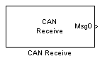
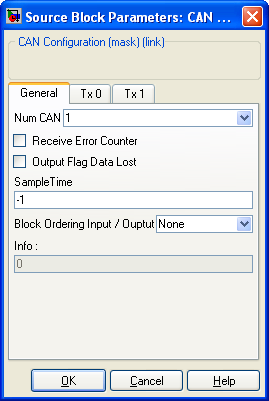
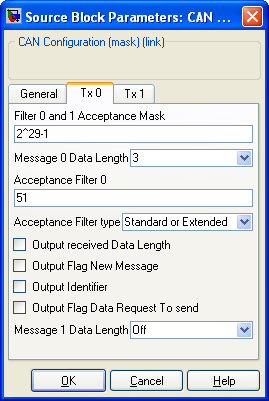
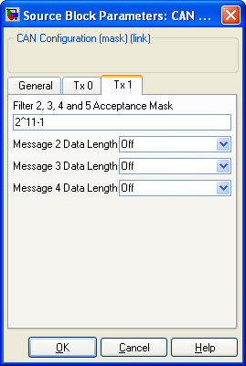

| |
Read data from a CAN bus

Description
The CAN Receive block with selected Identifier. The CAN message contain between 1 and 8 bytes. The five filters defined which message Identifier will be keept. Messages with Identifier not contained into one of the five filter are not catch. Two buffer allow to receive up to two different messages between the execution of two CAN Receive block (usually, from one time step to the other). The block works as a FIFO. Message with matching identifier comming while the buffer is already full are lost.
Dialog Box
  
-
Ref to the CAN peripheral being configured (some PIC have two CAN bus)
- Filter 0 and 1 Acceptance Mask / Filter 2, 3 and 4 Acceptance Mask
-
-
The two acceptance filter acts respectivly on Filter 0-1 and Filter 2-3-4.
A bit set to 0 in the acceptance Filter will be ignored by the respective fitlers.
-
For each filter (from 0 to 4) Message Data Length define the length of the message to be received by this filter. A message can contain up to eight bytes. If the Message Data Length is set to a lower value than the message being received, only the first bytes of the message will be taken into account. Iif the Message Data Length is set to a higher value than the message being received, the last bytes content of the message taken into account will be undefined (contains old values).
if the Message Data Lengt is set to a value higher than 1, the block output with the same length as the Message Data Length.
A simulink Demux block should be used to get each byte of the message.
If the Message Data Length is set to Off, the Filter is not used. No message will be received.
-
For each of the 5 filters, the acceptance filter allow to retain only the the CAN message with an identifier that match the Acceptance Filter. The Acceptance Filter is bitewise compare to the CAN message Identifier, except for the bytes where the Filter Acceptance Mask is set to 0.
-
Standard or Extended
Standard 11 bits
Extended 29 bits
- Output received Data Length
-
-
If checked, a block output with the Real Data Length of the message received appears. This Data Length is read from the CAN bus. It is independant from the Message x Data Length parameter.
-
If checked, a block output with a logic flag set to 1 each time a new message arrived.
-
If checked, a block output with the Message Identifier received.
- Output Flag Data Request To send
-
-
If checked, a block output with the Data Request To Send Flag appears.
-
The Receive Error Counter output the internal CAN Receive Error Counter. See CAN doccumentation for precision about Error Counter.
-
If checked, a block output with a flag appears. This flag is set to 1 when a message with a matching Identifier appears on the CAN bus, but cannot be stored because the buffer is already full.
-
Sample Time
-
Sample time of the block. -1 for inherited
-
Block Ordering Input / Output
-
If you want to force the execution order of blocks that are not connected, this option allow to add either an input, an output or both to the block. These virtual connection allow to force the ordering of the blocks.
-
Info
-
Information
-
|
The Microchip name PIC, dsPIC, and MPLAB are
registered trademarks of Microchip Technology Inc.
MATLAB, Simulink, and Real-Time Workshop are
registered trademarks of The MathWorks, Inc.
| Lubin Kerhuel 's Website |
Contact : [adresse e-mail retirée] |
|
|